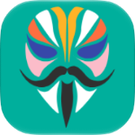

标准 magic mount 挂载到 /system，无需写系统分区，删除也不影响原生文件。
adb、fastboot、curl、git、htop、strace、gdb、tmux、ffmpeg、nodejs、python……10 大分类，常用的都在这。
curl / git / tar / unzip / awk 等基础库，开机自动就位，开箱即用。
库从 Termux 官方 / 镜像仓库解析最新版本安装，无需手动更新。
mount / unmount 走 overlayfs 热挂载，装完立刻可用，无需重启。
挂载前先检查 /system 同名 bin / lib，已存在则跳过，系统原生文件零风险。
把银行 / MOMO / 淘宝等检测 root 的应用加进 KernelSU denylist，运行时彻底隐藏 su 痕迹，开关即生效。
管理工具为 Rust 静态二进制，仅安装 / 挂载时运行后退出，空闲占用趋近 0。
armv7 设备自动使用 32 位原生二进制，其它架构回退 shell 脚本。
对比本地与云端版本号，发现新版自动弹窗，下载链接一键跳转。
内置 KsuWebUI：iOS 18 通透毛玻璃、G2 连续圆角、亮暗主题、自定义背景与壁纸模糊度。已挂载 / 扩展库 / 深度隐藏 / 设置，一站式管理。统一日志集中在 log/，问题好追溯。
刷了什么不重要，装上就能用。

MagiskMagisk 26+shell 每个操作都要 fork 解释器、字符串处理脆弱、JSON 解析易错。Rust 编译后是一个几 KB 级静态二进制：启动毫秒级、内存极小、永不因脚本错误半途崩溃。
iOS 18 通透毛玻璃，G2 连续圆角，触摸优先动效。手机平板都顺手。
Magisk / KernelSU / APatch → 模块 → 从本地安装 → 选择该 zip。
重启后打开 KernelSU 模块 WebUI，核心库自动就位。
免费 · 开源（Apache-2.0）· 支持 Magisk / KernelSU / APatch 与 32 位设备。大陆用户建议走镜像下载。
国内加速：下载页面内也提供 Release 镜像链接 · 想反馈 / 提需求 → Issues
不会。customize.sh 数秒内返回，service.sh 挂载重放有 timeout 60 保护，核心库补装完全后台。任何环节失败只写日志，禁用模块即可完全恢复开机。
不。模块没有守护进程、没有轮询、没有开机自启常驻，空闲时 CPU / 内存占用趋近 0。
能。armv7 设备自动用 32 位原生二进制，其它架构回退 shell 兜底，无需手动配置。
某些库（如 python）会同时装依赖的动态库到 /system/lib。若仍提示找不到，在 WebUI 中重新开关一次该库即可。
在「设置 → 下载镜像」选择清华或北外镜像，速度更稳。或使用官网下载区的 OpenList 镜像。
不会。模块只往 /system/bin 挂载你手动开启的库，不修改系统分区，删除库也不影响系统原有文件。
请在 GitHub Issues 新建 Issue，尽量附上：机型 / 安卓版本 / 架构（uname -m）、模块版本号、复现步骤、WebUI 控制台日志。